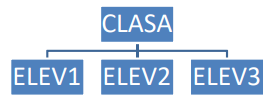

Fişa nr.12
- Porniţi aplicaţia pentru prezentări, deschideţi o nouă prezentare şi inseraţi în aceasta cinci noi diapozitive.
- Salvaţi prezentarea cu numele "tabele12.pptx" în folderul cu numele vostru apoi în format rtf (rich text format - outline / rtf) ca "tabele12.rtf" şi închideţi cele două fişiere
- Deschideţi fişierul "tabele12.pptx" şi introduceţi numele vostru în antet şi numărul de pagină în subsol. Titlul primului diapozitiv să fie "TABELE ŞI ORGANIGRAME" iar subtitlul "INFORMATICĂ"
- Aplicaţi prezentării "tabele12.pptx" un format (design template) aflat în temele de bază.
- Folosind o funcţie specială inseraţi o imagine din miniatură o singură dată în colţul din dreapta al tuturor diapozitivelor cu excepţia celui de tip titlu.
- În diapozitivul 2 inseraţi următorul tabel:
Situaţia elevului
| NUME ŞI PRENUME ELEV |
NOTĂ ROMANĂ |
NOTĂ MATEMATICĂ |
| Ionescu Constantin |
7 |
9 |
| Popescu Ionel |
8 |
6 |
| Irimia Irina |
9 |
8 |
| Popa Vasile |
6 |
7 |
- În diapozitivul 3 inseraţi următoarea organigramă:

Adăugaţi doi elevi în organigramă
- În folia 4 schimbaţi în galben culoarea de umplere a fundalului
- Creaţi o diagramă cu coloane folosind datele din tabelul din diapozitivul 2 și mutaţi-o în diapozitivul 5.
- Aplicaţi un efect de tranziţie între diapozitivele prezentării (se acceptă setarea automată)